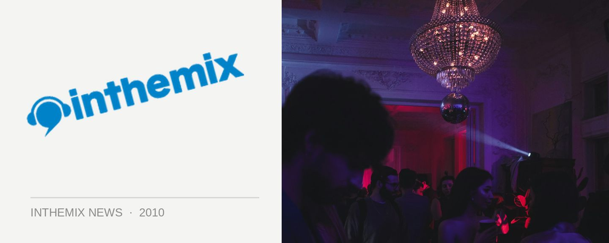

60+ acts line up for Hope for Haiti benefit gig
The whole world has come together to assist the Caribbean nation of Haiti following the January 12th earthquake – which so far has claimed an estimated 150,000 lives – so it’s no surprise that Sydney’s dance community has also come together to lend a helping hand. Last week it was revealed that Newtown haunt The Bank would be throwing a tasty little party in early February, and if you’re interested in doing your bit and having a great time in the process then you’ll have another chance when the Espere Hope 4 Haiti benefit event lands at World Bar on Monday February 1st.
The man behind Espere is San Francisco house head Chris Lum, who was also the man behind the massive tsunami appeal at YU a few years back that raised a massive $64,000. Chris will be coordinating a series of events to take place around the world on a single evening to raise money for a select group of NGOs, and the Sydney edition in Kings Cross will is set to be a stomper.
So far over 60 artists have confirmed they’ll be a part of the party and will donate their time free of charge, held over all four rooms of The World Bar, with one of the rooms hosted by none other than inthemix. 100 per cent of door and ticket sales, as well as profits from the bar, will go directly to Medecins Sans Frontieres, an organisation that has been working with Haiti since 1991.
Espere Hope 4 Haiti hits The World Bar on Monday February 1st, check out some of the artists below who have been confirmed so far:
Ajax
Kid Kenobi
Bag Raiders
Beni
Dangerous Dan
James Taylor
Anna Lunoe
Snob Scrilla Sound System
Killaqueenz
Ro Sham Bo
Yolanda Be Cool
Two Fresh
Act Yo Age
Ben Morris
Kato
Tom Piper
DCUP
Leo Sea-mist (Canyons/ hole in the sky)
Wax Motif
Mo’ Funk
Telefunken
Murat Kilic
Robbie Lowe
Lamanex (Illya + Toby Neal)
Foundation
Random Soul
John Devecchis
DJ Nyks
Monkey Tennis DJs
Marcus
Jono Fernandez
Foundation
Bad Ezzy
Adam Bozzetto
Discopunx
Lennox n Oakes
Generic DJs
Cassette
Little Bambalam
Wedding Ring Fingers
Mehow